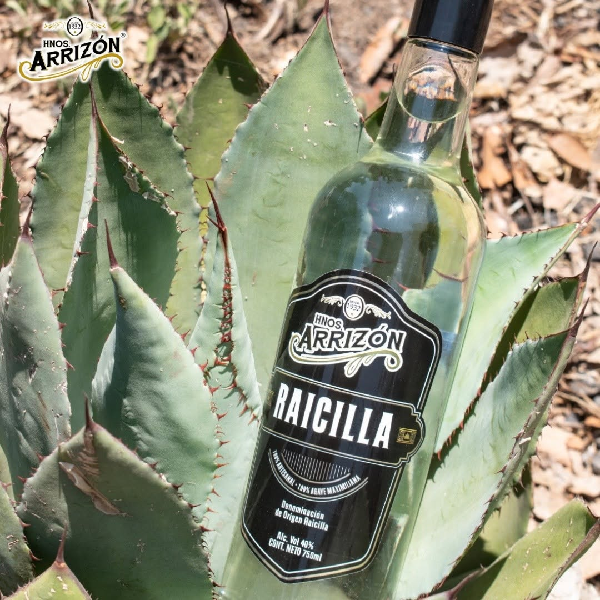
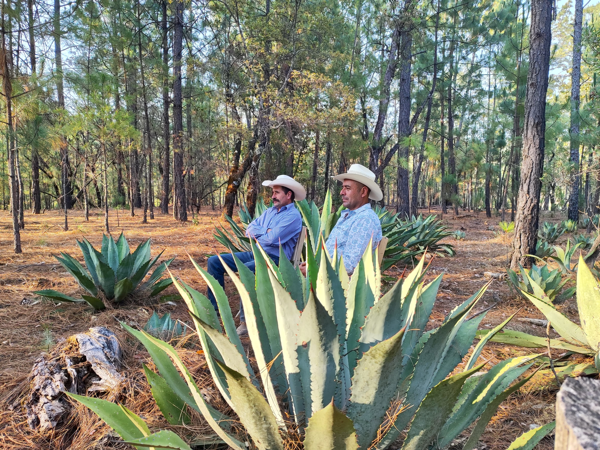
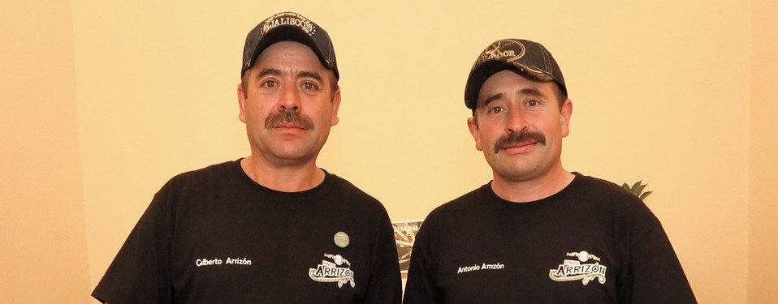
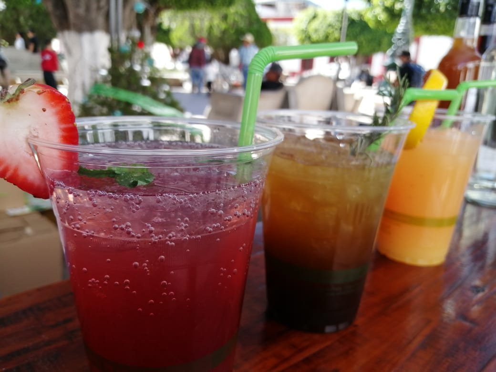

1932Origen · El sueño de Cananea
Blas Arrizón aprende la destilación del agave en las minas de Cananea, Sonora, y al volver a Jalisco la aplica al agave maximiliana: nace la raicilla Arrizón.
Destilando tradición…
Más de 90 años de una tradición que se transmite de generación en generación, de padre a hijo, en el corazón de la Sierra Occidental de Jalisco.
Origen · familia · La Vieja · generación a generación · formalización · marca · eventos.

1932Blas Arrizón aprende la destilación del agave en las minas de Cananea, Sonora, y al volver a Jalisco la aplica al agave maximiliana: nace la raicilla Arrizón.
 Familia
Familia
Durante décadas la raicilla se destila en secreto, para la familia y el pueblo. El saber se guarda como un tesoro.

La ViejaEn el rancho de La Vieja, en la sierra de Mascota, se levanta la Taberna La Vieja, donde el agave se convierte en destilado.

3ª GenGilberto y Antonio Arrizón Delgadillo recogen el saber familiar y se convierten en los maestros raicilleros de hoy.
 2019
2019
La raicilla obtiene su Denominación de Origen en junio de 2019 y la familia se formaliza como marca reconocida.
La marca se consolida como el primer registro de la raicilla en Mascota, con botellas que cruzan fronteras.
 Navidad
Navidad
En el XII Festival de la Raicilla, Sandra Arrizón es coronada Embajadora de la Raicilla.

HoyFestivales, ferias, coctelería y exportación: posicionados desde la sierra de La Vieja hasta la actualidad, sin perder el origen.
Maestros raicilleros · Herederos de Blas Arrizón
Custodian el proceso completo, del campo a la botella, tal y como lo hicieron sus abuelos.
Embajadora de la Raicilla 2019 · Ventas
Representante de la marca y voz de la familia en festivales, ferias y catas en todo México.Más de 90 años de saber heredado de padre a hijo, sin atajos.
Todo el proceso a mano en la Taberna La Vieja, del campo a la botella.
Respetamos los tiempos de la naturaleza: 8 años no se negocian.
Semilla propia, vivero, aprovechamiento integral del agave y residuos que regresan a la tierra.
El sabor pertenece a la sierra. Trabajamos con y para nuestra gente.
De La Vieja, Jalisco, al mundo. Una sola receta, la de siempre.